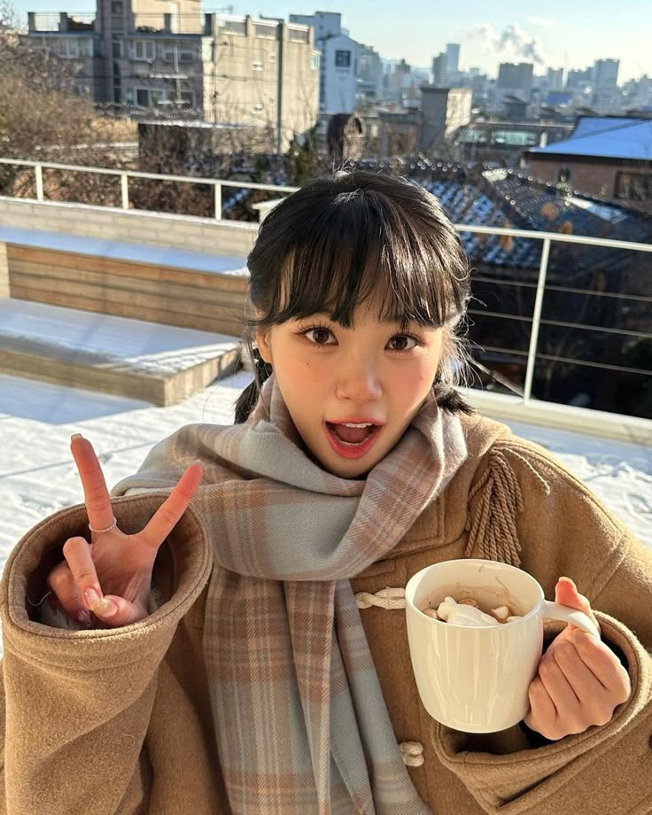
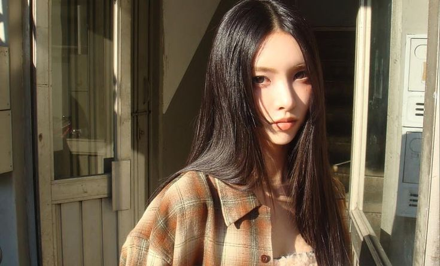

Mode pemilik
Gunakan ini hanya untuk preview lokal. Agar terlihat oleh semua orang, ganti file asli di folder assets/images lalu deploy ulang ke Cloudflare Pages.
Eco enzim yang bermanfaat, aman, dan dekat dengan rumah.
Eco enzim adalah cairan serbaguna yang dihasilkan dari fermentasi sisa sayur, buah, gula (molase), dan air. Produk buatan ibu-ibu Dusun Demangan ini membantu membersihkan rumah, menyuburkan tanaman, dan menjaga lingkungan tetap sehat.
Diproduksi secara gotong royong, aman untuk lingkungan, dan mudah dibuat di skala rumah tangga.

Dibuat dari 100% Bahan Alami
Setiap bahan dipilih dengan tujuan sederhana: memanfaatkan limbah organik menjadi sesuatu yang bermanfaat.
Gula Merah / Molase
Berperan sebagai sumber makanan mikroba dalam fermentasi.
Sisa Sayur & Kulit Buah
Bahan organik yang difermentasi untuk menghasilkan enzim.
Air Bersih
Pelarut alami yang memfasilitasi proses fermentasi.
Rasio umum pembuatan: 1 : 3 : 10 (molase : bahan organik : air)
Kumpulkan sisa dapur
Sayur, kulit buah, dan sisa organik dipilah untuk dijadikan bahan utama.
Campur dan fermentasi
Proses sederhana dilakukan secara bersama-sama agar hasilnya konsisten dan aman.
Bagikan untuk warga
Produk siap dipakai di rumah, ditanam di pekarangan, atau dibagikan ke tetangga.
Proses gotong royong warga Demangan
Melihat langsung proses pemotongan, pencampuran, hingga pengemasan membuat semangat kebersamaan semakin terasa.


Klik foto untuk mengganti dengan foto dokumentasi Anda.
Program Pembagian GRATIS untuk Warga!
Produk ini siap dibagikan khusus untuk masyarakat dan ibu-ibu PKK Dusun Demangan.